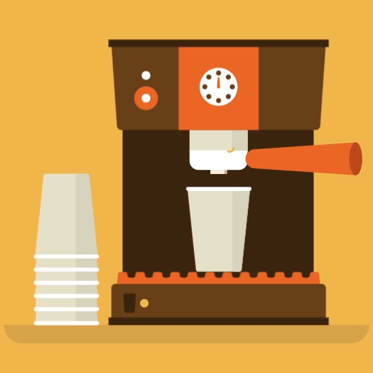
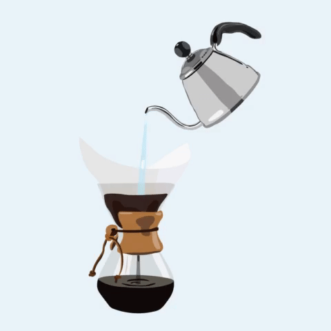

Espresso Press
Espresso Press

Coffee Maker

Chemex Coffee Maker
Chemex Coffee Maker

French Press
Say Buon Giorno to the most stylish De'Longhi range; the De'Longhi Icona Collection! The De'Longhi Icona espresso machine features a patented manual cappuccino system allowing you to achieve the richest, thickest, longest lasting foam for a superior beverage to be shared with friends and family or cherished alone. Choose between 1 and 2 shots of espresso or convenient easy serving espresso pods. With the 3-in-1 filter holder you can brew the exact beverage you desire. The Icona 15 bar pump espresso machine delivers authentic Italian cafe drinks quickly and effortlessly thanks to the stainless steel boiler and dual thermostats, which heat up to the optimal brewing temperature for espresso and cappuccino.
It features a patented manual cappuccino system with steam wand allowing you to achieve the richest, thickest, longest lasting foam for a superior beverage to be shared with friends and family or cherished alone. Choose between 1 and 2 shots of espresso or convenient easy serving espresso pods. With the 3-in-1 filter holder, you can brew the exact beverage you desire. The EC155 pump espresso machine delivers authentic Italian cafe drinks quickly and effortlessly thanks to the stainless steel boiler and dual thermostats, which heats up to the optimal brewing temperature for espresso and cappuccino.

The 2-Way FlexBrew Coffeemaker maximizes your brewing flexibility and offers more brewing options than most coffeemakers. To start your day, you can use the 'single-serve side' to brew into a standard-size cup or brew up to a 14 ounce. travel mug. What's more, you have the choice of brewing with a K-Cup pack or your favorite ground coffee. On mornings when you want to enjoy cup after cup, or when you're entertaining, the 'carafe side' makes a full 12-cup pot. So much in so little space, the 2-Way FlexBrew Coffeemaker provides maximum flexibility for your coffee-drinking enjoyment.
Classic functionality keeps brewing simple and easy. Just set it up, turn it on and brew. There you have it! Rich-tasting coffee expertly-brewed for you without the fuss. Grab-A-Cup Auto Pause is a lifesaver when you need a cup before the brew cycle is finished. It stops brewing so you can pour a rich-tasting cup and then finishes the brewing cycle after you place the carafe back in position. We put our best brewing forward with this easy-to-use, Simple Brew coffee maker. Experience the taste™ with the Mr. Coffee® brand.

The Eight Cup Classic Series Coffeemaker used together with the scientifically designed, patented CHEMEX® Bonded Filters, will guarantee that our pour over brewing process will deliver the perfect cup of coffee, without any sediments or bitter elements.
Add some European flair to your morning coffee routine with the Bodum Caffettiera 8 Cup French Press Coffee maker. If you enjoy the classic flavor of an old school press style coffee, but also appreciate unique design then this coffee maker is perfect for you. Equal parts old world charm and whimsical modern design this coffee maker covers all the bases. The traditional glass and stainless French press design has been revved-up with accents of red, blue and yellow and is guaranteed to add personality to your kitchen. Comes with a scoop for extra convenience.